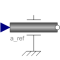

AccelerateForced movement of a flange according to an acceleration signal |

|
Information
This information is part of the Modelica Standard Library maintained by the Modelica Association.
The input signal a defines an angular acceleration in [rad/s2]. Flange flange is forced to move relative to flange support with this acceleration. The angular velocity w and the rotation angle phi of the flange are automatically determined by integration of the acceleration.
The input signal can be provided from one of the signal generator blocks of the block library Modelica.Blocks.Sources.
Parameters (1)
| useSupport |
Value: false Type: Boolean Description: = true, if support flange enabled, otherwise implicitly grounded |
|---|